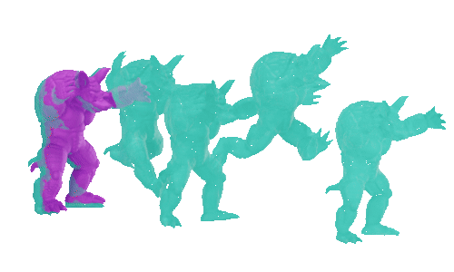
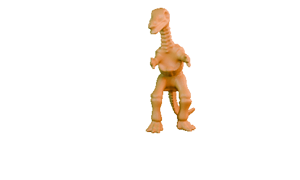

|
The University of Tokyo |
The University of Tokyo |
|  |  |
BlendSim is a novel framework that transitions the foundation of physics-based animations from discrete frame-by-frame methods to continuous interpolation trajectories using blendshapes.
AbstractWe propose BlendSim, a novel framework for editable simulation, and its lightweight storage using spacetime optimization. Traditional spacetime control methods suffer from a high computational complexity, which limits their use in interactive animation. The proposed approach effectively reduces the dimensionality of the problem by representing the motion trajectories of each vertex using continuous parametric Bézier splines with variable keyframe times. Because this mesh animation representation is continuous and fully differentiable, it can be optimized such that it follows the laws of physics under various constraints. The proposed method also integrates constraints, such as collisions and cyclic motion, making it suitable for real-world applications where seamless looping and physical interactions are required. Leveraging projective dynamics, we further enhance the computational efficiency by decoupling the optimization into local parallelizable and global quadratic steps, enabling a fast and stable simulation. PublicationComputer Graphics Forum (Eurographics 2025) Links and Downloads
Our gltf file can be viewed using any online viewer. Citation
TBD
|
{kind=link}
{kind=link}